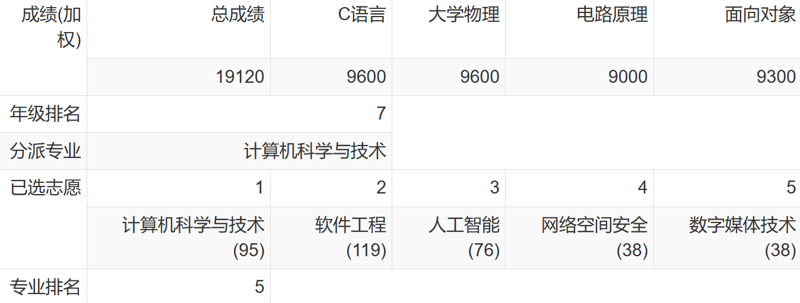
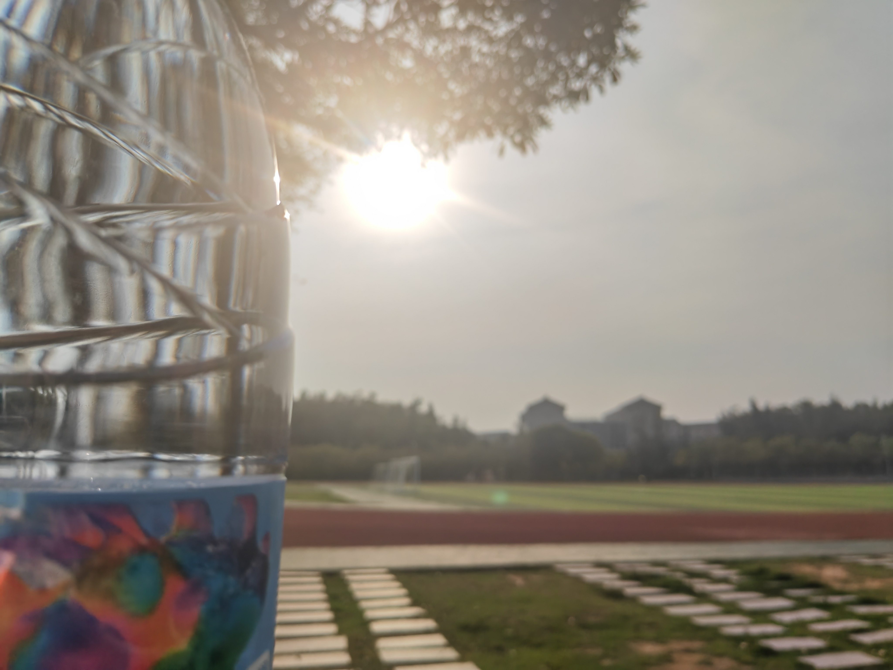
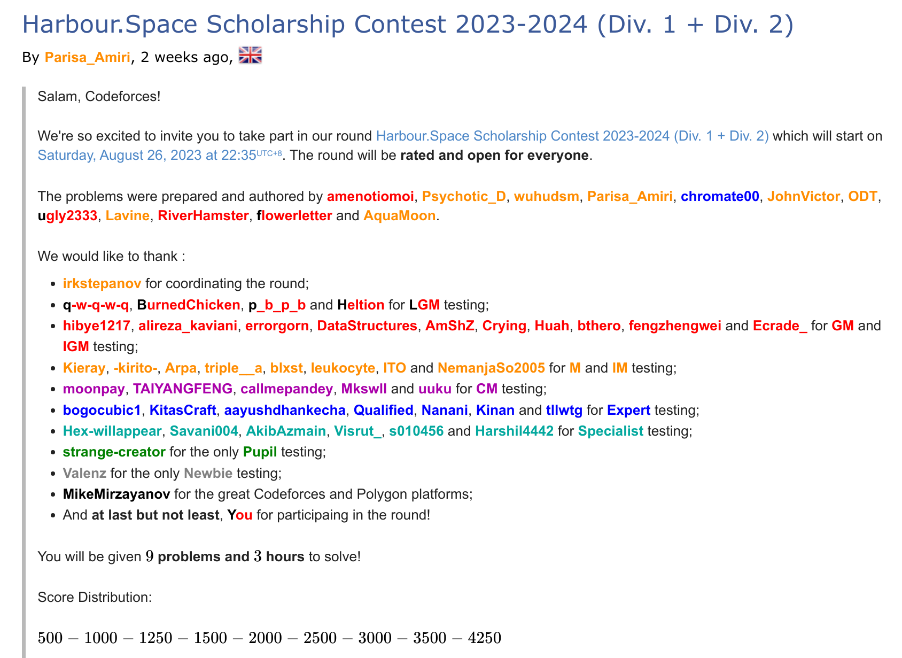

上半学期的内容不再赘述了，讲讲下半学期和小学期发生的新鲜事。
PS: 虾大的小学期将在明年被丢进历史的垃圾堆里（好！
LIFE
志愿服务
开始做志愿服务的动机是学校评奖评优需要一定的志愿时长。上学期因为新冠，学校里几乎没有志愿活动可做，于是这学期初我就在焦虑的驱使下开始到处找志愿工作。三到六月里我先后做了社区四点半课堂的老师，垃圾分类志愿者，自行车摆放志愿者，创客大赛工作人员，自习室管理员，无忧 e 课堂答疑和管理员。然后做着做着就远远超过了所需的志愿时长 XD，大概是领悟到了志愿服务的魅力，这与我在小学中学做的装装样子的志愿服务很不一样。
- 志愿汇上记录着的 30+ 小时志愿服务时长。
- 在隔壁沙美社区的一座宗祠里，我和其他志愿者在教小朋友下象棋。
- 下雨天也要坚持垃圾分类（国光五附近有概率刷出一群爱聊天的留学生噢）
- 创客大赛，一半的时间都在和学姐聊天摸鱼()
击剑比赛
击剑期末考打到 rk1 后，李生老师让我去报名了校击剑比赛。说是“新生杯”，实际上有好多经验丰富的击剑社社员参与，于是我就在八强的淘汰赛遗憾离场。
KFC
校内的 KFC 在学期初开张了，生意好的时候一天有 2k 单左右。(食堂震怒 XD)
- 湖边吃汉堡还挺香。
- 热辣香骨鸡！
新冠
CSP 认证打到一半的时候，我发现我的脑子转不动了，心跳也很快。我那时就在想，“大模拟题劲这么大的吗”。之后 debug 两个小时也没查出来少加的那个括号，最终以不到 300 分的成绩遗憾离场。出考场吹了会风还没缓过来，我意识到我可能发烧了。于是随便吃了点面包，然后回宿舍测抗原。接着就是下图。那段时间大概有五分之一的人中奖初阳或二阳。
- 初阳
- 第二次入住南存钿，(二人间+空调+送餐+不用上课) * 五天
GPA
理工科的课程都是 90+！思政类课程就缺点悟性了。另外大英四真是选课决定成绩，奇怪的老师和奇怪的考核都让我撞上了:( 这学期的课程变难+绩点变高理论上会让我的排名上升一点的，但是顶不住有几十个转专业来的佬+卷王梭哈计科，于是就 9% 变 22% 了。。。没逝，按规律转专业的同学之后排名掉的很快。
- 成绩单（小学期成绩还没出）
- 计科排名
- 大类排名
- 上学期的大类排名（对比发现信院人数增加了135人。。。）
专业
兜兜转转又决定是计科了。学软工似乎会把路走窄了，既然还没想好以后要做什么，不如先留条后路。唯一的问题是，评奖评优和保研始终会被一众佬压着。

小学期项目
选课之前听说这位老师很水，遂被骗去。第一节课上便要求我们看着英文文档去学习 SFML，一个 C++ 的多媒体库。并在之后的三周时间里组队做出一款游戏，还要在每周汇报进度。在两个十分靠谱的队友的帮助下，我们在 DDL 前完成了质量不错的游戏，游戏制作中小组的讨论与协作也很愉快。非常感谢他们。
- 这是项目主页
- 高质量开始菜单
- 游戏内截图
留校
因为暑假有 ACM 队的集训，我在小学期结束后又继续留校到 8 月 20 号。一个人待在宿舍非常舒适。
- 下午去操场包场。

- 猜猜这是凌晨还是傍晚？
黑天鹅
难得见到湖里的黑天鹅上岸。
- 吉兆：学长上岸！

- 学长们大概是喝腻了湖里的水。

料理
假期里尝试补上过去十几年都没关注过的料理技能树，跟着 up 主大碗拿铁的“有手就能做”系列做了一些唬人的菜：“麻辣水煮鱼”、“糖醋排骨”、“西冷牛排”、“蜜制烤鸡翅”。图见大碗拿铁视频（歌门不会拍料理，库鲁西）
番
发现一个可以做番剧统计与交流的老站，bangumi，功能和资料都好全，甚至还开放 api，我哭似。bgm 到现在为止已经运营了超过十年，所以你能在老番的条目下，看到数年前的人们在追番时留下的评论，真有种穿越时空的感觉。我现在在想着用它的 api 能做些什么有趣的项目。

CP
蓝桥杯国赛
- 不出意外的拿下国三，明年要更进一步。
校赛
- 校赛都差点打铁 xsl
CSP
200+ 分，这下真打铁了。原因见新冠篇。待我 12 月份二战 CSP！
百度之星
第一场平台出锅了，参赛人数比较少，于是我悄悄摸了个金奖。现在在考虑要不要去线下决赛，毕竟百度之星还没正式进学院的竞赛库，同时学校也不提供来回费用的报销。（另外，去一趟杭州好麻烦啊。。。）
网络赛
网络赛打出了 WF 的难度，真坐牢 5h。除了计算几何差一点点就做出来了有点可惜外，其他是一点不会。
- 队伍改名为“我推的Acmer！”，并临时换了一位队友。
牛客
暑假集训的主要项目，牛客多校。要问为什么没报隔壁的杭电多校，怕坐牢（即答
- 有游戏体验，但不多。
UCup
鉴定为良心比赛，下个学期的加训拜托了。stO Universal Cup。
CF
- 在蓝名边缘卡了几个月后终于开始向上震荡。我越发觉得写题的心态很重要，要是初见就认为自己写不出来，或者给自己定了无形的上限，那就真的不会再有突破。
- 第一次帮 CF round 验题，上首页了很开心。

模板
- 暑假补上了好多科技，并整理到了我的模板库里。
- Full List（大多数模板都是封装好的>v<）
结尾
哦嗨哟！新学期！